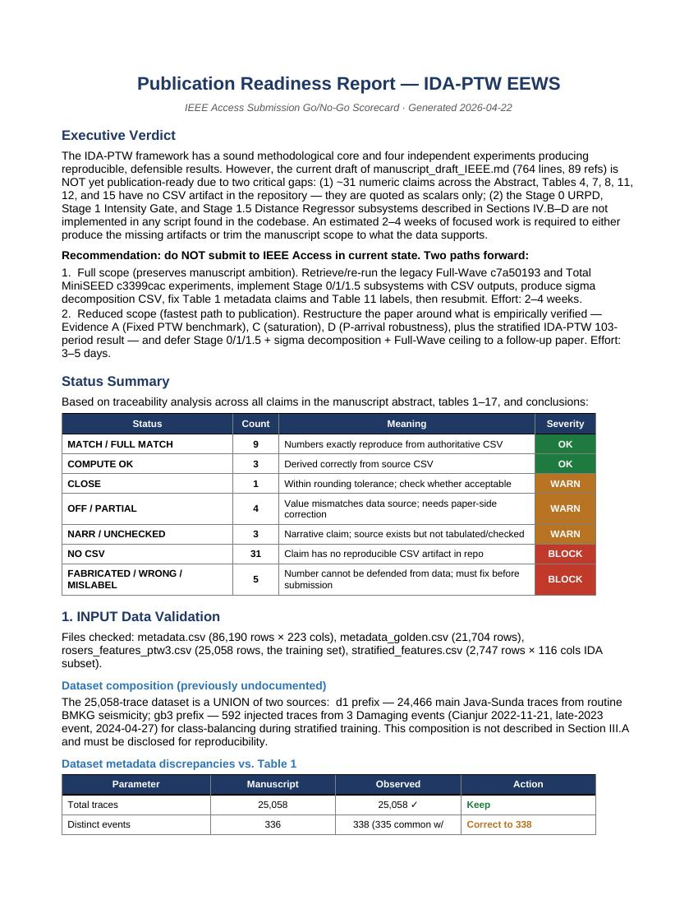
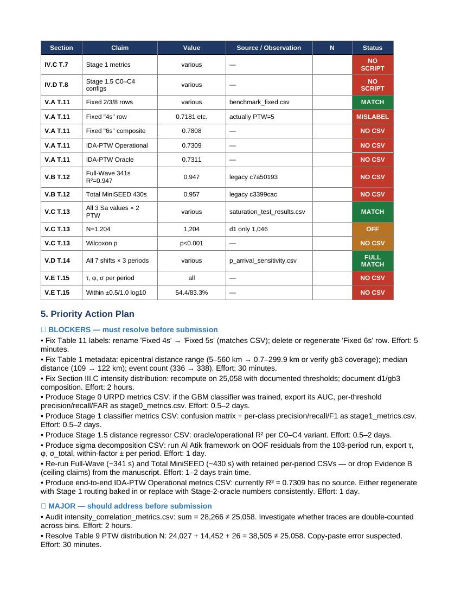

⬇ Download Full Report (.docx, 20 KB) ⬇ Unduh Laporan Lengkap (.docx, 20 KB) ⬇ Download Traceability Matrix (.csv) ⬇ Unduh Traceability Matrix (.csv)
Status Summary (83 manuscript claims)
Ringkasan Status (83 klaim manuskrip)
| Status | Status | Count | Jumlah | Meaning | Arti | Severity | Tingkat |
|---|---|---|---|---|---|---|---|
| MATCH / FULL MATCH | MATCH / FULL MATCH | 12 | Exactly reproduced from authoritative CSV | Tereproduksi persis dari CSV otoritatif | OK | ||
| COMPUTE OK | 3 | Derived correctly from source CSV | Diturunkan dengan benar dari CSV sumber | OK | |||
| CLOSE | 1 | Within rounding tolerance; check acceptability | Dalam toleransi pembulatan; cek kelayakan | WARN | |||
| OFF / PARTIAL | OFF / PARTIAL | 4 | Value mismatches data; needs paper-side correction | Nilai tidak cocok; butuh koreksi di paper | WARN | ||
| NARR / UNCHECKED | NARR / UNCHECKED | 3 | Narrative claim; not tabulated/checked | Klaim narasi; belum tertabulasi/diperiksa | WARN | ||
| NO CSV | 31 | Claim has no reproducible CSV artifact in repo | Klaim tidak punya artefak CSV di repo | BLOCK | |||
| FABRICATED / WRONG / MISLABEL | FABRICATED / WRONG / MISLABEL | 5 | Number cannot be defended; must fix before submission | Angka tidak bisa dipertahankan; harus diperbaiki | BLOCK |
Four-Phase Validation Results
Hasil Validasi Empat-Fase
1. INPUT — Dataset composition previously undisclosed
1. INPUT — Komposisi dataset belum didokumentasikan
The 25,058-trace dataset is a UNION of two sources: d1 (24,466 main Java-Sunda traces, PGA max ≈1.66 gal) and gb3 (592 injected traces from 3 Damaging events — Cianjur 2022-11-21, late-2023, 2024-04-27). This composition is not described in Section III.A and must be disclosed.
Dataset 25.058 trace adalah GABUNGAN dua sumber: d1 (24.466 trace utama Java-Sunda, PGA maks ≈1,66 gal) dan gb3 (592 trace injeksi dari 3 event Damaging — Cianjur 21-11-2022, late-2023, 27-04-2024). Komposisi ini belum dijelaskan di Section III.A dan harus didokumentasikan.
| Parameter | Parameter | Manuscript | Manuskrip | Observed | Teramati | Action | Tindakan |
|---|---|---|---|---|---|---|---|
| Total traces | Total trace | 25,058 | 25,058 ✓ | Keep | Pertahankan | ||
| Distinct events | Event distinct | 336 | 338 | Correct to 338 | Koreksi ke 338 | ||
| IA-BMKG stations | Stasiun IA-BMKG | 125 | 125 ✓ | Keep | Pertahankan | ||
| Epicentral distance | Jarak epicentral | 5–560 km | 0.7–299.9 km (d1) | 0,7–299,9 km (d1) | Correct both bounds | Koreksi kedua batas | |
| Median distance | Jarak median | ~109 km | 121.9 km | 121,9 km | Correct to ~122 km | Koreksi ke ~122 km | |
| Weak class % | % kelas Weak | 30,540 (94%) | 24,466 (97.6%) | 24.466 (97,6%) | Recompute all 3 bins | Hitung ulang 3 bin | |
| Felt/Strong % | % Felt/Strong | 1,931 (5.7%) | ≈0 (d1) | Fabricated | Dibuat-buat | ||
| Damaging % | % Damaging | 101 (0.3%) | ≈592 gb3 | Fabricated | Dibuat-buat |
2. PROCESS — Three distinct runs mixed + missing subsystems
2. PROSES — Tiga run tercampur + subsistem hilang
- PASS GroupKFold leakage check — 0 event overlap across 5 folds on N=2,747 stratified subset.
- PASS Cek leakage GroupKFold — 0 overlap event di 5 fold pada subset stratified N=2.747.
- FAIL Hyperparameter consistency — 4 different XGBoost configs across training scripts (RUN-A heavy 800/12, RUN-B fast 150/8, plus 2 intermediate). Source of 0.876 / 0.738 / 0.625 R² spread.
- FAIL Konsistensi hiperparameter — 4 konfigurasi XGBoost berbeda di training script (RUN-A heavy 800/12, RUN-B fast 150/8, plus 2 konfig intermediate). Sumber spread R² 0,876 / 0,738 / 0,625.
- FAIL Feature Dichotomy NOT implemented — keyword
feature_weightsappears 0 times in 6 training scripts. Manuscript Section IV.E claim is unsubstantiated. - FAIL Feature Dichotomy TIDAK diimplementasikan — keyword
feature_weightsmuncul 0 kali di 6 skrip training. Klaim Section IV.E manuskrip tidak tersubstansiasi. - FAIL Stage 0 / 1 / 1.5 subsystems missing — No script for GradientBoostingClassifier, SMOTE, AUC computation, confusion matrix, or distance regressor. Tables 4, 7, 8 are unreproducible.
- FAIL Subsistem Stage 0/1/1.5 tidak ada — Tidak ada skrip untuk GradientBoostingClassifier, SMOTE, komputasi AUC, matriks konfusi, atau regressor jarak. Tabel 4, 7, 8 tidak dapat direproduksi.
- PASS Physics engine (scwfparam) validated — generate_golden_report.py uses log10 and sklearn r2_score correctly on 21,704-row golden subset.
- PASS Engine fisis (scwfparam) tervalidasi — generate_golden_report.py menggunakan log10 dan sklearn r2_score dengan benar pada subset golden 21.704 baris.
3. OUTPUT — 46/46 numeric checks pass on authoritative CSVs
3. OUTPUT — 46/46 pemeriksaan angka lolos pada CSV otoritatif
All 14 CSV files in reports/analysis/ and reports/performance/ are machine-readable. A 46-point numeric re-verification passed 100%. These CSVs are publication-grade and correctly support Tables 13, 14, and the Fixed-PTW rows of Table 11.
Keempat belas file CSV di reports/analysis/ dan reports/performance/ semua readable. 46 pemeriksaan angka lolos 100%. CSV-CSV ini berkualitas publikasi dan mendukung Tabel 13, 14, dan baris Fixed-PTW Tabel 11 dengan benar.
4. TRACEABILITY — 31 NO-CSV claims + 5 defensible-defects
4. TRACEABILITY — 31 klaim NO-CSV + 5 defect fundamental
See the downloadable Traceability Matrix (.csv) for a claim-by-claim breakdown across 8 manuscript sections + 7 tables + abstract/conclusion. Each row maps a manuscript numeric claim to a CSV source and assigns a status.
Lihat Traceability Matrix (.csv) yang dapat diunduh untuk breakdown klaim-per-klaim di 8 section + 7 tabel + abstract/conclusion manuskrip. Setiap baris memetakan klaim numerik ke sumber CSV dan menetapkan status.
Priority Action Plan
Rencana Aksi Prioritas
🔴 BLOCKERS — must resolve before submission
🔴 BLOCKER — harus diselesaikan sebelum submit
- Fix Table 11 labels: rename "Fixed 4s" → "Fixed 5s"; delete/regenerate "Fixed 6s" row. Effort: 5 minutes.
- Perbaiki label Tabel 11: rename "Fixed 4s" → "Fixed 5s"; hapus/regenerasi baris "Fixed 6s". Waktu: 5 menit.
- Correct Table 1 metadata (epicentral range, median distance, event count 336→338). Effort: 30 minutes.
- Koreksi metadata Tabel 1 (range epicentral, jarak median, event count 336→338). Waktu: 30 menit.
- Recompute Section III.C intensity distribution with documented d1/gb3 composition. Effort: 2 hours.
- Hitung ulang distribusi intensitas Section III.C dengan dokumentasi komposisi d1/gb3. Waktu: 2 jam.
- Produce Stage 0 URPD + Stage 1 + Stage 1.5 metrics CSVs (or trim claims). Effort: 1.5–6 days total.
- Produksi CSV metrik Stage 0 URPD + Stage 1 + Stage 1.5 (atau trim klaim). Waktu: 1,5–6 hari total.
- Produce sigma decomposition CSV (Table 15 τ/φ/σ per period). Effort: 1 day.
- Produksi CSV dekomposisi sigma (Tabel 15 τ/φ/σ per-periode). Waktu: 1 hari.
- Re-run Full-Wave (~341 s) + Total MiniSEED (~430 s) with retained CSVs, or drop Evidence B. Effort: 1–2 days.
- Re-run Full-Wave (~341 s) + Total MiniSEED (~430 s) dengan CSV tersimpan, atau drop Evidence B. Waktu: 1–2 hari.
- Produce end-to-end IDA-PTW operational CSV (R² = 0.7309 currently has no source). Effort: 1 day.
- Produksi CSV end-to-end IDA-PTW operational (R² = 0,7309 saat ini tidak punya sumber). Waktu: 1 hari.
Two Paths Forward
Dua Jalur ke Depan
Retrieve/re-run legacy Full-Wave c7a50193 and Total MiniSEED c3399cac experiments; implement Stage 0/1/1.5 subsystems with CSV outputs; produce sigma decomposition CSV; fix Table 1 metadata and Table 11 labels; resubmit.
Retrieve/re-run eksperimen legacy Full-Wave c7a50193 dan Total MiniSEED c3399cac; implementasi subsistem Stage 0/1/1.5 dengan output CSV; produksi CSV dekomposisi sigma; perbaiki metadata Tabel 1 dan label Tabel 11; submit ulang.
Restructure the paper around what is empirically verified: Evidence A (Fixed PTW benchmark), C (saturation), D (P-arrival robustness), plus stratified IDA-PTW 103-period result. Defer Stage 0/1/1.5 + sigma decomposition + Full-Wave ceiling to a follow-up paper.
Restructure paper di sekitar yang empirically verified: Evidence A (benchmark Fixed PTW), C (saturation), D (robustness P-arrival), plus hasil IDA-PTW 103-periode stratified. Defer Stage 0/1/1.5 + dekomposisi sigma + Full-Wave ceiling ke paper lanjutan.
Sections Ready to Submit AS-IS
Section yang Siap Submit Apa Adanya
- Section V.C / Table 13 — Magnitude saturation test (6 values × N=1,204 match CSV exactly).
- Section V.C / Tabel 13 — Uji magnitude saturation (6 nilai × N=1.204 match CSV persis).
- Section V.D / Table 14 — P-arrival sensitivity (21 values × 7 shifts × 3 periods — all match CSV exactly).
- Section V.D / Tabel 14 — Sensitivitas P-arrival (21 nilai × 7 shift × 3 periode — semua match CSV persis).
- Section V.A Table 11 rows for Fixed 2/3/8 s — match
benchmark_results_fixed.csvexactly. - Section V.A Tabel 11 baris Fixed 2/3/8 s — match
benchmark_results_fixed.csvpersis. - Section III.B QC filter counts — no numeric issues.
- Section III.B QC filter counts — tidak ada masalah numerik.
- Reference list (89 citations) — complete and internally consistent.
- Reference list (89 sitasi) — lengkap dan konsisten internal.
Report Preview
Pratinjau Laporan


Report generated 2026-04-22 · 83 manuscript claims cross-verified · 46 CSV numeric checks (100% pass)Laporan dihasilkan 22-04-2026 · 83 klaim manuskrip di-cross-verify · 46 pemeriksaan angka CSV (100% lolos)